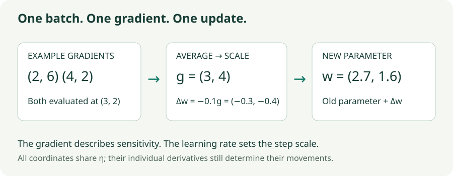

SGD: Learning from Noisy Gradients
Derive the mini-batch update, see where sampling noise comes from, and explore learning-rate stability.
A neural network may have billions of parameters, but one SGD update has a simple contract: estimate the direction in which training loss increases, then move a short distance the other way. The complications come from which examples supplied that direction and how far the step travels.
Backpropagation computes derivatives. SGD uses those derivatives to change parameters. Changing the optimizer does not change the chain rule used to compute a gradient.
1. From a training loss to an update
Let $w\in\mathbb R^d$ collect the parameters, and let $\ell_i(w)$ be the loss on training example $i$. With $N$ examples, the average training objective is
The gradient $\nabla L(w)$ is a vector. Its $j$th component is the partial derivative $\partial L/\partial w_j$: how sensitive the loss is to a small change in coordinate $j$, holding the others fixed. For a proposed displacement $\Delta w$, the first-order change in loss is $\nabla L(w)^\top\Delta w$. A negative inner product therefore predicts a local decrease.
Choose $\Delta w=-\eta\nabla L(w)$ with learning rate $\eta>0$. The predicted change becomes $-\eta\|\nabla L(w)\|^2$, which is nonpositive. This explains the minus sign. It is a local approximation: a large step can leave the region where this prediction is accurate.
Computing the full gradient requires all $N$ examples. SGD replaces it with a sampled estimate. At step $t$, using a batch $\mathcal B_t$ of size $B$:
One example gives classical stochastic gradient descent; a subset gives mini-batch SGD; using the entire dataset gives full-batch gradient descent. In deep learning, “SGD” usually includes the mini-batch case. The loss reduction matters: summing instead of averaging a batch multiplies the gradient by $B$ and changes the effective step scale.
2. Calculate one update
Take a two-parameter model at $w_0=(3,2)$. Suppose two sampled examples produce gradients $(2,6)$ and $(4,2)$. The batch gradient is their coordinate-wise average:
With $\eta=0.1$, the displacement is $(-0.3,-0.4)$ and the new parameter is $w_1=(2.7,1.6)$. The two coordinates share one learning rate, but their movements differ because their derivatives differ. A gradient is not itself a new parameter value; it supplies the direction and relative coordinate magnitudes of the change.

3. Where the randomness enters
At a fixed $w$, different examples generally disagree about the best direction. A uniformly sampled example has expected gradient equal to the full gradient, because each of the $N$ example gradients receives probability $1/N$. Averaging independent draws preserves that expectation:
“Unbiased” describes the average over possible batches at the same parameter. It does not mean each sampled update decreases full loss, or that the expected training trajectory equals the deterministic trajectory in a nonlinear model.
For independent draws with replacement, let $\Sigma$ be the covariance matrix of one example’s gradient at that fixed parameter. The covariance of their sum is $B\Sigma$ because cross-covariances vanish. The batch average divides the sum by $B$, so its covariance is multiplied by $1/B^2$:
Thus four times as many independent examples gives half the standard deviation of the gradient estimate, not one quarter. Without-replacement batches have a finite-population correction; the full dataset has exactly zero sampling noise. The lab keeps these cases separate.
4. Why a large learning rate can explode
Consider one curved direction with loss $L(w)=\tfrac12\lambda w^2$, where $\lambda>0$ measures curvature. Its gradient is $\lambda w$, so a full-gradient step gives
The distance to zero shrinks only when $|1-\eta\lambda|<1$, or $0<\eta<2/\lambda$. If $\eta\lambda$ lies between 1 and 2, the sign flips each step but the oscillations shrink. Above 2 they grow. At exactly 2, the iterate alternates without getting closer.
In multiple dimensions, a quadratic has several curvature directions. The sharpest one limits the stable learning rate. That same small rate may make progress frustratingly slow in a flatter direction. This is the narrow-valley problem that motivates momentum and preconditioning. This bound is exact for a positive-definite quadratic with full gradients, not a universal safe learning rate for a neural network.
5. Lab: noise and curvature are different problems
The eight examples have losses $\ell_i(w)=\tfrac12(w-a_i)^\top H(w-a_i)$. Their centers are $0.35$ times $(\pm1,0)$, $(0,\pm1)$, and the four $(\pm1,\pm1)$ combinations. The centers average to zero, so the full objective’s minimizer is $w=0$. The Hessian has eigenvalues $1$ and $\kappa$ and is rotated by the selected angle.
The chart reports excess full loss, $L(w)-L(0)=\tfrac12w^\top Hw$. This removes the constant loss due to the different example centers. It does not report the current batch’s loss.
SGD trajectory explorer
Start at $(3,2)$. Each click evaluates a fresh batch gradient and applies one update.
- Isolate noise: keep $\eta=0.04$, compare one sampled row with 16 sampled rows, then select the full dataset. The smaller batch tends to wander more near the optimum.
- Isolate instability: use the full dataset with $\kappa=20$. Compare $\eta=0.04$ with $0.12$. Even perfect gradients cannot rescue the second setting’s unstable sharp direction.
- Remove the narrow valley: set $\kappa=1$. A full-gradient step with $\eta=1$ reaches the minimizer in one update for this particular quadratic.
6. A training loop without hidden scaling
# Plain mini-batch SGD; loss is averaged over the batch.
optimizer = torch.optim.SGD(model.parameters(), lr=0.03)
for inputs, targets in loader:
optimizer.zero_grad(set_to_none=True)
predictions = model(inputs)
loss = criterion(predictions, targets) # reduction="mean"
loss.backward()
optimizer.step()The optimizer reads gradients already computed by backpropagation. Clear them deliberately: PyTorch accumulates gradients into buffers. For $K$ equal-sized microbatches representing one larger batch, divide each mean loss by $K$, accumulate backward passes, and call step() once. Unequal microbatch sizes require weighting by their example counts to reproduce the same average. Batch-dependent layers can still make microbatch training differ from a single large forward pass.
Plain SGD needs no persistent per-parameter momentum or second-moment buffer. It still needs parameters, gradients, and the model’s other training memory. A learning-rate schedule changes $\eta_t$ over training; a smaller late rate reduces stochastic wandering but also slows movement. Monitor validation performance separately from training loss. Low training loss alone does not establish useful generalization.
7. Questions worth answering
No. A noisy gradient can increase full loss, and the evaluated batch may also change. Inspect a consistent evaluation set and the trend. With full gradients on a smooth quadratic and a rate inside its stability interval, persistent growth is a different warning.
There is no universal requirement. Averaging keeps the expected gradient scale unchanged. Batch-size learning-rate rules concern training dynamics, noise, and the number of updates per epoch; they are not needed to correct an averaged gradient’s units.
Loss reduction, gradient clearing, data scaling, learning rate, and a reproducible small run. An adaptive optimizer can change scaling; it cannot repair a wrong gradient or target.
Sources and further reading
Bottou, Stochastic Gradient Descent Tricks develops the stochastic approximation viewpoint. PyTorch’s SGD documentation specifies its implementation options. The worked vectors, quadratic dataset, stability calculation, and interactive experiment above are constructed for these notes.